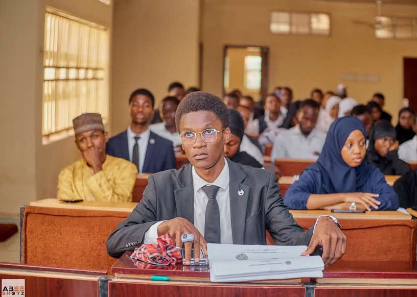

The premier student-run pro bono legal aid institution at Usmanu Danfodiyo University, Sokoto. Bridging the gap between legal theory and community service.
Affiliated with the Network of University Legal Aid Institutions (NULAI Nigeria).
Established under the Faculty of Law, Usmanu Danfodiyo University, Sokoto (UDUSOK), the Law Clinic serves a dual mandate: equipping law students with practical advocacy skills while delivering free, quality legal services to indigent and underserved residents across Sokoto State.
Through supervised client counseling, alternative dispute resolution, and public legal enlightenment, our clinicians uphold the highest standards of ethics, professionalism, and social responsibility.
To bring our vision into reality the law clinic, through colaboration inintiatives of otherwise provides professional legal advice and representation in civil matters of the commuinity who qualify for legal aid in the community.To provide legal educatiion and training to law students of Usman Danfodiyo University Sokoto.
To help build a community that is legally empoered and that possesse a strenghened capacity to exercise their rights, either as individual or as a members of the community.To ensure that all indigent person in its sphere of influence will have access to justice.Law graduates who are professionally trained and are at the highest echeleons insofar as their employabity is concerned. To ensure a broader community that us sensitized to their social justice resposnsibity.
The clininc aims and objectives as clearly spelt out in its enabling constitution includes but not limited to, ensuring good governance and accountability within and outside the university, providing avenue to settle dispute through alternantive dispute resolution, training of young persons on personla and career development, educationg training and sensitizing consituent and it's host community in Sokoto State on their fundamentalrights, environmental and domestice rights, social and co-relative right and assist in providing legal services to indigent persons who are waiting trial at various correctional centers and pther actvities which may be necessary to promote the reputablle image of the caliphate Law Clininc (CLC)

Structured clinical departments delivering specialized pro bono interventions.
Reviewing files of awaiting-trial inmates at Sokoto Custodial Centres and facilitating bail applications and legal referrals.
Providing peaceful mediation and conciliation services for family, tenancy, and community disputes outside formal courts.
Educating secondary schools, market women, and rural communities on fundamental human rights and civic duties.
Offering confidential legal support and referrals against gender-based violence, child labor, and domestic abuse.
Conducting structured client interviews, legal research, and drafting basic legal processes under lecturer supervision.
Publishing law clinic journals, policy briefs, and empirical studies on access to justice in Northwest Nigeria.
Academic leaders and legal practitioners supervising clinical standards and ethics.
Click on any officer to view their portfolio and clinical responsibilities.